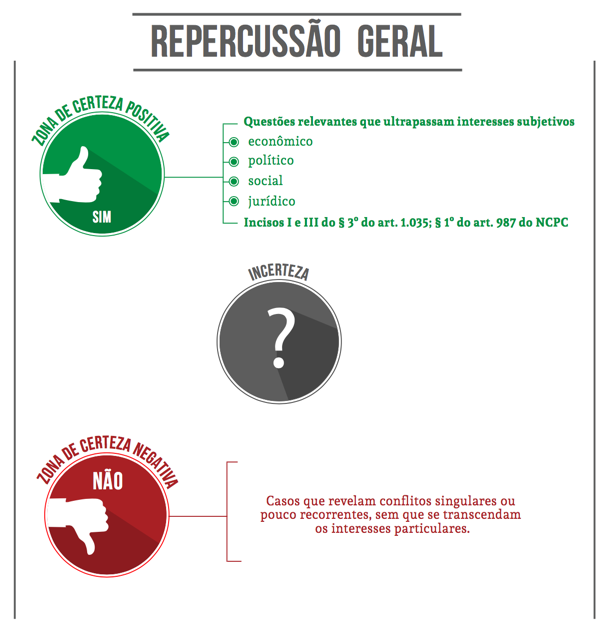

Competências originárias e recursais do STF

As competências originárias e recursais do STF, dispostas no art. 102 de nossa Constituição, foram objeto de nossa breve análise na Aula 1 de nosso curso.
Na doutrina processual civil brasileira há algumas pequenas divergências quanto à classificação de alguns requisitos de admissibilidade entre os intrínsecos e os extrínsecos. Há quem faça a distinção, por exemplo, afirmando que a ausência de fato extintivo do direito de recorrer é um requisito intrínseco, enquanto que a ausência de fato impeditivo seria um requisito extrínseco. Entretanto, como o foco do curso não é a Teoria Geral dos Recursos, não entramos a fundo nessa discussão. De todo modo, fica aqui feita a ressalva.
Tradução livre de: “The Congress, whenever two thirds of both Houses shall deem it necessary, shall propose Amendments to this Constitution, or, on the Application of the Legislatures of two thirds of the several States, shall call a Convention for proposing Amendments, which, in either Case, shall be valid to all Intents and Purposes, as Part of this Constitution, when ratified by the Legislatures of three fourths of the several States, or by Conventions in three fourths thereof, as the one or the other Mode of Ratification may be proposed by the Congress; Provided that no Amendment which may be made prior to the Year One thousand eight hundred and eight shall in any Manner affect the first and fourth Clauses in the Ninth Section of the first Article; and that no State, without its Consent, shall be deprived of its equal Suffrage in the Senate”.
Tradução livre de: “For, instead of narrowing the Court’s jurisdiction, Congress chose, in more and more instances, to delegate to the Court the responsibility for determining which federal issues are of suficiente national importance to warrant Supreme Court review. The process of issue selection, therefore, has become an increasingly crucial part of the review function”.
Créditos do curso
Material didático do curso a distância:
Repercusão Geral: origens, inovações e sua aplicação ao Supremo Tribunal Federal
Validação pedagógica e diagramação:
Supremo Tribunal Federal
Secretaria de Gestão de Pessoas
Coordenadoria de Desenvolvimento de Pessoas
Seção de Educação a Distância
Conteudista:
Abhner Youssif Mota Arabi (servidor do STF)
Revisora de textos:
Tatiana Viana Fraga (servidora do STF)
Designer Web:
Higor Bezerra Rodrigues (servidor do STF)
2017, Supremo Tribunal Federal
Todos os direitos reservados
Este material possui funções didáticas, sem fins comerciais
Para mais detalhes sobre as condições de uso, acesse: Licença STF
Dados para referência
SUPREMO TRIBUNAL FEDERAL. Curso a distância: Repercusão Geral: origens, inovações e sua aplicação ao Supremo Tribunal Federal. Brasília: Seção de Educação a Distância, 2017.
Disponível em https://ead.stf.jus.br/. Acesso restrito com login e senha.
Ambiente virtual de aprendizagem: https://ead.stf.jus.br
e-mail: seead@stf.jus.br

AULA 5 – Aspectos práticos e procedimentais da repercussão geral
1. Introdução
Olá!
Na aula passada, concluímos o estudo dos aspectos históricos relevantes ao nosso curso, analisando também alguns elementos de direito comparado. Na busca de instrumentos processuais existentes em outros países que sejam semelhantes ao instituto da repercussão geral, iniciamos estudando com maior destaque questões relativas ao modelo norte-americano e ao writ of certiorari, já que sua estruturação serviu de paradigma para muitos outros países.
Na sequência, analisamos também alguns instrumentos similares existentes em outros países, a fim de que percebêssemos que o ponto comum de todos eles é o gradual desenvolvimento de mecanismos de filtragem dos recursos destinados às suas supremas cortes, mediante a seleção de quais casos serão ou não efetivamente julgados, conforme maior ou menor atribuição de discricionariedade a esses tribunais pelo sistema normativo de cada país.
No fim de nossa aula, analisamos rapidamente a arguição de relevância, que recebia tratamento normativo pelo Regimento Interno do STF. Pudemos, ainda, estabelecer alguns pontos de similaridade e de distinção desse instituto com a repercussão geral.
Dando continuidade, nesta Aula 5 iniciaremos a análise de algumas questões mais práticas e procedimentais relativas ao instituto. Desse modo, analisaremos o aspecto formal da repercussão geral como um requisito intrínseco de admissibilidade do recurso extraordinário, qual o seu conceito e seus critérios definidores, a quem cabe a competência para sua apreciação, qual a forma de sua alegação, a quem pertence o ônus argumentativo de sua demonstração, bem como se é possível a intervenção de amicus curiae para sua deliberação. Sempre que cabível, serão citados os dispositivos legais pertinentes, destacando-se eventuais mudanças promovidas pelo CPC/2015 em relação ao regime anterior do CPC/1973, bem como os dispositivos do Regimento Interno do STF atinentes aos assuntos estudados.
Vamos começar?
2. A repercussão geral como requisito intrínseco de admissibilidade do recurso extraordinário
Do ponto de vista formal, a repercussão geral é um requisito de admissibilidade específico do recurso extraordinário. Como se sabe, em relação aos recursos em geral, costumam-se fazer duas análises separadas: (i) seu juízo de admissibilidade e (ii) seu juízo de mérito.
Enquanto essa segunda análise se refere aos próprios motivos e fundamentos da irresignação da parte diante de uma decisão judicial (singular ou colegiada), os requisitos de admissibilidade representam questões prévias ao conhecimento do mérito recursal, impedindo, se ausentes, ou possibilitando, se presentes, o prosseguimento à análise do teor do recurso em si. Seriam, portanto, questões preliminares ao mérito do recurso.
SAIBA MAIS - QUESTÕES PRELIMINARES VS. QUESTÕES PREJUDICIAIS

Na teoria geral do processo, costuma-se apontar algumas questões que devem ser examinadas em primeiro lugar, antes de outras, pois a sua solução é logicamente anterior às demais. São as chamadas questões prévias.
Conforme a influência que tenham na temática posterior, as questões prévias podem ser preliminares ou prejudiciais. Em definição breve, preliminares são aquelas questões cujo exame impede ou possibilita o prosseguimento da análise processual, influenciando não exatamente no teor da análise posterior, mas na própria possibilidade de sua continuidade ou não. De outro lado, as questões prejudiciais são aquelas que, decididas em primeiro lugar, influenciam o conteúdo da segunda questão a ser analisada.
A propósito, de forma bastante didática, a distinção é assim explicada por Fredie Didier Jr.:
Considera-se questão preliminar aquela cuja solução, conforme o sentido em que se pronuncie, cria ou remove obstáculo à apreciação da outra. A própria possibilidade de apreciar-se a segunda depende, pois, da maneira por que se resolva a primeira. A preliminar é uma espécie de obstáculo que o magistrado deve ultrapassar no exame de uma determinada questão. É como se fosse um semáforo: acesa a luz verde, permite-se o exame da questão subordinada; caso se acenda a vermelha, o exame torna-se impossível.
[...]
Considera-se questão prejudicial aquela de cuja solução dependerá não a possibilidade nem a forma do pronunciamento sobre a outra questão, mas o teor mesmo desse pronunciamento. A segunda questão depende da primeira não no seu ser, mas no seu modo de ser. A questão prejudicial funcional como uma espécie de placa de trânsito, que determina para onde o motorista (juiz) deve seguir. (DIDIER JR., 2015, p. 440-442.)
Fredie Didier Jr.
Possui graduação em Direito pela Universidade Federal da Bahia (1998), mestrado em Direito pela Universidade Federal da Bahia (2002), doutorado em Direito pela Pontifícia Universidade Católica de São Paulo (2005), pós-doutorado na Universidade de Lisboa (2009) e livre-docência na Universidade de São Paulo (2012).
Dentro dessa distinção, José Carlos Barbosa Moreira distinguia três tipos de questões preliminares: as preliminares ao conhecimento do mérito da causa (como são os pressupostos processuais), as preliminares de recurso (que são os seus requisitos de admissibilidade, como é o caso da repercussão geral em relação ao recurso extraordinário) e as preliminares de mérito.
Assim, no juízo de admissibilidade de um determinado recurso são analisados esses requisitos preliminares para que se possa apreciar o mérito do recurso (que não necessariamente coincide com o mérito da ação). Esses requisitos de admissibilidade podem ser intrínsecos ou extrínsecos.
Os requisitos intrínsecos dizem respeito à existência ou não do próprio poder de recorrer. Nesse grupo, são analisados, por exemplo, o cabimento do recurso (se há previsão legal de seu manejo para aquela hipótese), o interesse recursal (que normalmente se configura em razão de alguma sucumbência da parte no processo, revelando a necessidade e a utilidade de sua atuação) e a legitimidade da parte, bem como a ausência de algum fato impeditivo ou extintivo (como, por exemplo, a renúncia ao direito de recorrer, a desistência do recurso ou a aquiescência com a decisão a ser recorrida add_to_photos).
De outro lado, colocam-se os requisitos extrínsecos, que dizem respeito ao modo do exercício do poder de recorrer, já caracterizado pela presença de seus requisitos intrínsecos. Aqui são analisadas, por exemplo, questões como a forma do recurso, a existência ou não de preparo e sua tempestividade.
A referida classificação é assim resumida por Daniel Mitidiero e Luiz Guilherme Marinoni:
Os pressupostos de admissibilidade recursal reputam-se intrínsecos quando concernem à existência, ou não, do poder de recorrer. São considerados extrínsecos, ao contrário, quando atinem ao modo de exercer esse poder. No primeiro grupo entram o cabimento, o interesse recursal, a legitimidade para recorrer e a inexistência de fato extintivo do direito de recorrer. Acresce-se a esse rol, em caso de recurso extraordinário ou recurso especial, o enfrentamento da questão constitucional ou federal na decisão recorrida. No segundo, a regularidade formal da peça recursal, a tempestividade, o preparo [...]. (MARINONI; MITIDIERO, 2012, p. 39.)
Dentro dessa classificação, sob seu aspecto formal, o requisito da repercussão geral seria um pressuposto processual intrínseco. Isso porque, ao se prever que “O Supremo Tribunal Federal, em decisão irrecorrível, não conhecerá do recurso extraordinário quando a questão constitucional nele versada não tiver repercussão geral” (art. 1.035 do CPC/2015), está se referindo à própria existência ou não do poder de recorrer: não havendo repercussão geral na matéria constitucional alegada, não subsiste o poder de recorrer. No mesmo sentido é o Regimento Interno do STF ao prever que “O Tribunal recusará recurso extraordinário cuja questão constitucional não oferecer repercussão geral” (art. 322, caput, do RISTF).
Sinteticamente, Daniel Amorim Assumpção Neves também apresenta uma visão geral sobre a repercussão geral como requisito de admissibilidade do recurso extraordinário. A citação é interessante, ainda, porque apresenta uma espécie de revisão geral de muitos aspectos que estudamos até agora em nosso curso, além de já introduzir alguns temas que ainda abordaremos:
Com a Emenda Constitucional 45/2004, foi acrescentado ao art. 102 da CF um terceiro parágrafo, que criou a repercussão geral como um pressuposto genérico de admissibilidade do recurso extraordinário. Percebendo-se com clareza que o Supremo Tribunal Federal tinha se desvirtuado da função para a qual foi projetado, atuando em demandas de menor significância, e sendo exorbitante a quantidade de recursos extraordinários que chegam àquele tribunal, [...] o legislador resolveu criar um pressuposto de admissibilidade para que o tribunal passe a julgar somente causas de extrema relevância ou de significativa transcendência.
Trata-se de singular pressuposto de admissibilidade, já que não pode ser analisado pelo órgão prolator da decisão impugnada, ainda que o recurso extraordinário passe por um juízo de admissibilidade perante esse órgão. A competência para sua análise é exclusiva do Supremo Tribunal Federal, nos termos do § 2º do art. 1.035, do Novo CPC. E também contém outra interessante particularidade: é sempre o último requisito de admissibilidade a ser analisado, de forma que só se passa à análise da repercussão geral tendo o recurso extraordinário preenchido todos os demais requisitos genéricos e específicos de admissibilidade [...].
A novidade trazida ao ordenamento constitucional pela Emenda Constitucional 45/2004 não teve aplicação imediata, havendo entendimento pacífico de que seria necessária uma lei infraconstitucional para regulamentar o novo pressuposto intrínseco de admissibilidade do recurso extraordinário. Essa exigência foi cumprida dois anos mais tarde, por meio da Lei 11.418/2006, que criou os arts. 543-A e 543-B do CPC/1973. Mas ainda existiam resistências à vigência imediata da repercussão geral, apesar de a vacatio legis vir prevista expressamente no art. 4º da referida lei, que determinava sua aplicação a partir do primeiro dia de vigência da lei. O Supremo Tribunal Federal, por meio da Emenda Regimental 21/2007, especificou ainda mais o procedimento a ser observado, sendo que em julgamento do Tribunal Pleno restou decidido que a repercussão geral só passou efetivamente a ser considerada a partir de 3 de maio de 2007, data de publicação da referida emenda regimental. Restou também decidido que esse novo requisito de admissibilidade se aplica às demandas civis e criminais (STF, Tribunal Pleno, AI-QO 664.567/RS, rel. Min. Sepúlveda Pertence, j. 18.06.207, DJ 06.09.2007). Atualmente a repercussão geral é tratada pelo art. 1.035 do Novo CPC. (NEVES, 2016, p. 1753.)
A primeira observação que destacamos, portanto, é que a existência ou não de repercussão geral em um determinado recurso extraordinário é questão preliminar ao mérito do recurso, devendo ser examinada antes que aquele seja, ou não, efetivamente analisado. Independentemente da matéria que verse, que deverá ser sempre constitucional, um recurso extraordinário só será admissível se, ao lado do preenchimento de seus demais requisitos, demonstrar possuir repercussão geral.
Nessa mesma linha, destaca-se, ainda, que a existência ou não do requisito da repercussão geral só será analisada se verificada, na hipótese sob análise, a presença dos outros requisitos de admissibilidade (tais como tempestividade, legitimidade recursal, prequestionamento, cabimento, etc.). Trata-se de providência que decorre da boa lógica e que está expressamente prevista no art. 323 do Regimento Interno do STF, segundo o qual só se procederá à análise da existência de repercussão geral “quando não for caso de inadmissibilidade do recurso por outra razão”.
3. Critérios para a verificação da existência de repercussão geral
Mas quando se poderá dizer que uma determinada questão possui ou não repercussão geral?
Trata-se, é bem verdade, de um conceito jurídico vago, sem que exista uma definição precisa e objetivamente identificável. Com efeito, não é raro notar a utilização de conceitos jurídicos indeterminados pela legislação como forma de conferir maior liberdade ao intérprete e aplicador da norma. Como destaca Karl Engisch:
[...] se nos deparam hoje diversos modos de expressão legislativa que são de molde a fazer com que o julgador (o órgão aplicador do Direito) adquira autonomia em face da lei. Como modos de expressão deste tipo distinguiremos: os conceitos jurídicos indeterminados, os conceitos normativos, os conceitos discricionários e as cláusulas gerais. (ENGISCH, 2001, p. 208.)
No entanto, a utilização de conceitos indeterminados, justamente por se revelarem mais vagos e imprecisos, implicam certas situações de dúvidas quando aplicados a um caso concreto. Em geral, costuma-se ter uma zona de certeza positiva do que se encaixa naquele conceito, uma zona de certeza negativa do que não pertence àquele conceito, mas subsiste uma zona cinzenta, de penumbra, em que imperam as dúvidas e as incertezas. Nesse sentido, destacam-se, uma vez mais, os ensinamentos de Karl Engisch, grande jurista alemão:
Por conceito indeterminado entendemos um conceito cujo conteúdo e extensão são em larga medida incertos. Os conceitos absolutamente determinados são muito raros no Direito. Em todo o caso, devemos considerar como tais os conceitos numéricos (especialmente em combinação com os conceitos de medida e os valores monetários: 50 km, prazo de 24 horas, 100 marcos). Os conceitos jurídicos são predominantemente indeterminados, pelo menos em parte. É o que pode afirmar-se, por exemplo, a respeito daqueles conceitos naturalísticos que são recebidos pelo Direito, como os de “escuridão”, “sossego nocturno”, “ruído”, “perigo”, “coisa”. E com mais razão se pode dizer o mesmo dos conceitos propriamente jurídicos, como os de “assassinato” (“homicídio qualificado”), “crime”, “acto administrativo”, “negócio jurídico”, etc.
Com PHILIPP HECK podemos distinguir nos conceitos jurídicos indeterminados um núcleo conceitual e um halo conceitual. Sempre que temos uma noção clara do conteúdo e da extensão dum conceito, estamos no domínio do núcleo conceitual. Onde as dúvidas começam, começa o halo do conceito. Que numa noite sem luar, pelas vinte e quatro horas, nos espaços não iluminados, domina a escuridão na nossa latitude, é uma coisa clara; dúvidas fazem já surgir as horas do crepúsculo. É fora de toda a dúvida que os imóveis, os móveis, os produtos alimentares, são coisas; mas outro tanto se não poderá dizer, por exemplo, relativamente à energia eléctrica ou a um penacho de fumo (formando as letras de um reclame) no céu. É certo e seguro que, verificado um parto bem sucedido e o nascimento de uma criança de progenitores humanos, estamos em presença de um “homem” em sentido jurídico; mas já não tem resposta tão segura a questão de saber se e em que momento nos encontramos perante um “homem” (e não já um simples “feto”) logo durante os trabalhos de parto (depois de iniciadas as contracções). Esta questão receberá mesmo diferentes respostas consoante os diferentes ramos do Direito: para o Direito civil, somente temos um homem dotado de “capacidade jurídica” com o termo do nascimento, ao passo que, segundo o Direito penal, já “durante o nascimento” (mas a partir de que momento?) existe um “homem” que pode ser objecto de um assassinato, de um homicídio voluntário ou de um homicídio por negligência. (ENGISCH, 2001, p. 208-210.)
Assim, haverá casos em que se terá certeza de que o tema tem repercussão geral; em outros, ter-se-á certeza de que não; muitos, porém, ficarão na zona cinzenta entre a certeza positiva e a certeza negativa. Entretanto, apesar de tal inevitável indefinição, o legislador preocupou-se em estabelecer alguns parâmetros que indicam a presença de repercussão geral em um determinado caso. O art. 543-A do CPC/1973, introduzido pela Lei nº 11.418/2006, dispunha que para a análise de repercussão geral “será considerada a existência, ou não, de questões relevantes do ponto de vista econômico, político, social ou jurídico, que ultrapassem os interesses subjetivos da causa”, ideia que é mantida no art. 1.035, § 1º, do CPC/2015, com alguns ajustes redacionais. Também o Regimento Interno do STF dispõe os mesmos requisitos, ao dispor no art. 322, parágrafo único, que, “para efeito da repercussão geral, será considerada a existência, ou não, de questões que, relevantes do ponto de vista econômico, político, social ou jurídico, ultrapassem os interesses subjetivos das partes”.

É disposta, portanto, uma fórmula que conjuga dois elementos básicos: relevância e transcendência da questão constitucional suscitada. No que se refere à relevância, essa não necessariamente deve ser jurídica, podendo, igualmente, uma causa se apresentar relevante do ponto de vista econômico, político ou social. Já em relação à transcendência, exige-se que a questão discutida ultrapasse o mero interesse subjetivo das partes em litígio, seja do ponto de vista quantitativo (quando houver muitos processos ou cidadãos atingidos pela questão jurídica a ser definida, como nos casos de direitos transindividuais, por exemplo, como os difusos, os coletivos em sentido estrito e os individuais homogêneos) ou qualitativo (quando a questão debatida se mostrar relevante do ponto de vista da unidade jurídica ou da uniformização de interpretação de determinado dispositivo constitucional, por exemplo).
Desse modo, apesar de consistir em conceito jurídico indeterminado, não se trata propriamente de uma plena discricionariedade judicial para a seleção dos casos a serem julgados, diferentemente do que acontece em outros países, como já vimos, por exemplo. Assim:
o fato de estarmos diante de um conceito jurídico indeterminado, que carece de valoração objetiva no seu preenchimento, e não de um conceito que implique poder discricionário para aquele que se encontra encarregado de julgar, pode permitir, ademais, um controle social, pelas partes e demais interessados, da atividade do Supremo Tribunal Federal mediante um cotejo de casos já decididos pela própria Corte. (MARINONI; MITIDIERO, 2012, p. 42.)
Quanto a essa parte, cabe ainda dispormos sobre os casos em que se terá a presunção absoluta da existência de repercussão geral. Trata-se de situações em que o próprio legislador já previu, de forma geral, abstrata e objetiva, hipóteses em que estará necessariamente caracterizada a existência de repercussão geral.
O tema foi objeto de tratamento mais específico e próprio pelo Novo CPC, ampliando tais hipóteses. Nesse sentido, os incisos I e III do § 3º do art. 1.035 dispõem que “Haverá repercussão geral sempre que o recurso impugnar acórdão que: I – contrarie súmula ou jurisprudência dominante do Supremo Tribunal Federal; III – tenha reconhecido a inconstitucionalidade de tratado ou de lei federal, nos termos do art. 97 da Constituição Federal”. Note que o ponto comum dessas hipóteses é valorizar os entendimentos já consolidados pelo STF na interpretação da Constituição, bem como a mantença de sua maior hierarquia quanto à aplicação do texto constitucional.
Comparativamente, o art. 543-A, § 3º, do CPC/1973 apenas previa a hipótese em que o recurso impugnasse “decisão contrária a súmula ou jurisprudência dominante do Tribunal” (que é a hipótese atualmente mantida no inciso I do § 3º do art. 1.035 do CPC/2015). Na redação original do novo Código, tinha-se, ainda, a previsão de mais uma hipótese de repercussão geral obrigatória: quando o recurso se voltasse contra acórdão proferido em julgamento de casos repetitivos. Entretanto, esse inciso foi revogado pela Lei nº 13.256/2016, que alterou o Novo CPC antes mesmo de sua entrada em vigor.
Não obstante essa revogação, destaca-se que se manteve vigente o § 1º do art. 987 do CPC/2015, que, tratando do Incidente de Resolução de Demandas Repetitivas (IRDR), dispõe que “Do julgamento do mérito do incidente caberá recurso extraordinário ou especial, conforme o caso [...], presumindo-se a repercussão geral de questão constitucional eventualmente discutida”. Imagina-se que se trate de um descuido legislativo, de modo que a alteração superveniente acabou tendo um alcance menor do que se desejava. Na prática, considerando que não se poderia admitir a interposição de recurso extraordinário com repercussão geral diante do julgamento de outro recurso extraordinário repetitivo, em comparação com a redação original do Código, restou excluída apenas a presunção de repercussão geral para recursos extraordinários interpostos diante de acórdãos que julguem recursos especiais repetitivos.
Por fim, em doutrina, há quem sustente a existência de algumas hipóteses em que se teria a presunção parcial de existência de repercussão geral, quais sejam:
(a) divergência entre tribunais a respeito da questão constitucional; (b) existência de ação de controle de constitucionalidade; (c) ações coletivas. Aparentemente trata-se de hipóteses em que se justifica a existência de repercussão geral, mas não parece adequado se falar nesses casos de presunção relativa. São, na verdade, adequados exemplos de situações em que a transcendência e a relevância exigidas no art. 1.035, caput, do Novo CPC, estarão presentes. (NEVES, 2016, p. 1755.)
4. Forma e ônus da arguição e demonstração da existência de repercussão geral
No início da existência da sistemática da repercussão geral, exigia-se que, na petição de recurso extraordinário, houvesse uma preliminar destacada e fundamentada na qual se argumentasse por sua existência, sob pena de não conhecimento do recurso. Nesse sentido, o § 2º do art. 543-A do CPC/1973, introduzido pela Lei nº 11.418/2006, previa a obrigação de que “O recorrente deverá demonstrar, em preliminar do recurso, para apreciação exclusiva do Supremo Tribunal Federal, a existência da repercussão geral”.
Sob a vigência de tal dispositivo, afirmou-se no STF o entendimento de que a existência da preliminar formal era indispensável ao conhecimento do recurso, ainda que este versasse temática com nítida relevância e transcendência ou mesmo que a questão nele suscitada já tivesse tido sua repercussão geral reconhecida em outro processo paradigma.
Um precedente que se pode citar quanto ao aspecto é a questão de ordem levantada no agravo regimental no Recurso Extraordinário com Agravo 663.637, relatado pelo Ministro Ayres Britto, que à época ocupava a Presidência da Corte. Nesse caso, impugnava-se decisão proferida pelo então Presidente Ministro Cezar Peluso, pela qual se negava seguimento ao ARE, sob o fundamento da “ausência, na petição do apelo extremo, de preliminar formal e fundamentada de repercussão geral, nos termos do § 2º do art. 543-A do CPC”, conforme trecho do relatório.
No agravo regimental, alegava-se justamente que, apesar de não haver preliminar formalmente destacada no corpo do recurso, em que se argumentasse pela existência de repercussão geral no caso, “a demonstração de ocorrência de repercussão geral [...] se encontra implícita no recurso extraordinário”. Por fim, justificava-se que “a matéria posta a julgamento já teve sua repercussão geral reconhecida”. Durante o julgamento, houve interessante debate entre os Ministros (o inteiro teor do julgamento pode ser conferido aqui), que contou inclusive com pedido de vista do Ministro Gilmar Mendes. Acabou prevalecendo a posição de que se “o recurso se mostrou totalmente silente, não trazendo à balha capítulo alusivo à repercussão geral”, o “defeito de forma o prejudica, pouco importando que se trate de tema já inserido no rol daqueles que serão julgados pelo Plenário” (trecho do pronunciamento do Ministro Marco Aurélio na ocasião). Por sua relevância, destaca-se a ementa do julgado:
QUESTÃO DE ORDEM. RECONHECIMENTO, PELO SUPREMO TRIBUNAL FEDERAL, DA PRESENÇA DA REPERCUSSÃO GERAL EM DETERMINADO PROCESSO. PRELIMINAR FORMAL E FUNDAMENTADA DE REPERCUSSÃO GERAL NOS OUTROS RECURSOS QUE TRATEM DO MESMO TEMA. EXIGIBILIDADE.
1. Questão de ordem resolvida no sentido de que o reconhecimento, pelo Supremo Tribunal Federal, da presença da repercussão geral da questão constitucional em determinado processo não exime os demais recorrentes do dever constitucional e processual de apresentar a preliminar devidamente fundamentada sobre a presença da repercussão geral (§ 3º do art. 102 da Constituição Republicana e § 2º do art. 543-A do CPC).
2. Agravo regimental desprovido. (ARE 663.637-AgR-QO, Rel. Min. Ayres Britto, Presidente, Tribunal Pleno, julgado em 12/9/2012, publicado no DJE de 6/5/2013.)
Ressalva-se, porém, ter havido pronunciamento em sentido parcialmente diferente, considerando que o Ministro Gilmar Mendes assim se posicionou:
Feitas essas considerações, entendo que assiste razão à agravante quanto à inexigência de preliminar formal e fundamentada de repercussão geral nos casos em que o tema já foi apreciado por meio do regime da repercussão geral.
É importante enfatizar que repercussão geral presumida (art. 543-A, § 3º, do CPC) é diferente de repercussão geral já apreciada. No primeiro caso, a preliminar formal de repercussão é uma exigência legal, conforme esta Corte já decidiu, no julgamento do RE 569.476-AgR, Rel. Min. Ellen Gracie, Tribunal Pleno, DJE 25.4.2008. A flexibilização que proponho diz respeito ao segundo caso, quando este Tribunal já se manifestou efetivamente sobre a relevância do tema, reconhecendo ou rejeitando a repercussão.
Nessa última situação, não me parece lógico inadmitir um recurso extraordinário ao fundamento de ausência de preliminar formal e fundamentada de repercussão geral, até porque se a decisão recorrida for contrária à decisão do STF, a parte ainda poderá aviar pleito rescisório, cujo trâmite será muito prolongado e irá de encontro a todas as recentes reformas processuais que vieram no sentido de efetivar o princípio da celeridade.
Entretanto, essa discussão parece estar parcialmente superada diante da superveniência do Novo CPC. Isso porque, apesar de se continuar exigindo a demonstração da existência de repercussão geral pelo recorrente, não mais se faz menção à necessidade de uma preliminar expressa na petição do recurso extraordinário abordando o tema. A propósito, destaca-se a nova redação do art. 1.035, § 2º, segundo o qual: “O recorrente deverá demonstrar a existência de repercussão geral para apreciação exclusiva pelo Supremo Tribunal Federal”.
Apesar de sutil, a alteração representa interessante mudança. Na prática, ao mesmo tempo em que persiste o ônus ao recorrente quanto à demonstração da existência de repercussão geral no caso que se quer levar à apreciação do STF, passa a ser possível tal comprovação pela integralidade de suas razões recursais, sem a necessidade estrita e específica de que haja preliminar formal em separado. A propósito, destaca-se o Enunciado nº 224 do Fórum Permanente de Processualistas Civis (FPPC), segundo o qual, em referência ao art. 1.035, § 2º, do Novo CPC, “A existência de repercussão geral terá de ser demonstrada de forma fundamentada, sendo dispensável sua alegação em preliminar ou em tópico específico”.
5. Competência para apreciação da existência de repercussão geral
A competência para a análise se um determinado caso revela, ou não, controvérsia dotada de repercussão geral é exclusiva do Supremo Tribunal Federal, nos termos expressamente consignados pelo art. 1.035, § 2º, do CPC. É dizer: não se admite que o tribunal de origem incorra na matéria.
Cumpre lembrar que, assim como era sob a vigência do CPC/1973, o Novo Código manteve (apesar de não ser essa a sua redação original e a providência decorrer das já comentadas alterações promovidas pela Lei nº 13.256/2016) a realização de um primeiro juízo de admissibilidade junto ao tribunal de origem, perante o qual é apresentado o recurso extraordinário, nos termos do art. 1.030 do CPC/2015. Entretanto, nem mesmo na realização desse juízo primeiro de admissibilidade pelo tribunal a quo é cabível a análise sobre a existência ou não de repercussão geral da matéria, providência que é reservada ao pronunciamento exclusivo do STF.
Note que, sob a vigência do CPC/1973, quando se exigia a existência de preliminar formal e destacada em que se argumentasse pela existência de repercussão geral, cabia ao tribunal de origem verificar se a petição de recurso extraordinário apresentada cumpria esse requisito formal. Apesar de não caber a tal órgão judicial a análise de seu teor, cabia tão somente a análise atinente à presença ou não desse requisito formal, podendo inadmitir o recurso em caso de sua ausência. Entretanto, considerando que agora não mais se faz essa exigência formal de forma rígida, entende-se que não mais caberá ao tribunal a quo nem mesmo verificar a existência de tal requisito.
6. Possibilidade de intervenção de amicus curiae
A possibilidade da intervenção de amici curiae para a aferição da existência, ou não, de repercussão geral (relevância e transcendência) em determinado caso é agora decorrência de previsão expressa do Novo CPC. Com efeito, o § 4º do art. 1.035 do CPC/2015 dispõe que “O relator poderá admitir, na análise da repercussão geral, a manifestação de terceiros, subscrita por procurador habilitado, nos termos do Regimento Interno do Supremo Tribunal Federal”. Nesse mesmo sentido, há também previsão no Regimento Interno do STF: “Mediante decisão irrecorrível, poderá o(a) Relator(a) admitir de ofício ou a requerimento, em prazo que fixar, a manifestação de terceiros, subscrita por procurador habilitado, sobre a questão da repercussão geral” (art. 323, § 3º, conforme redação atribuída pela Emenda Regimental nº 42/2010).
A intervenção do amicus curiae é instituto jurídico destinado a proporcionar ao órgão julgador conhecimentos técnicos especializados de pessoas, naturais ou jurídicas, capazes de contribuir para a análise de temas complexos, interdisciplinares e de maior relevo. Trata-se de uma figura que já existe em nosso direito há algum tempo, ainda que não exatamente com esse nome. É dizer: a possibilidade de admissão do ingresso de uma pessoa física ou jurídica no processo para ajudar o órgão julgador com conhecimentos acerca do thema decidendum não é novidade no direito brasileiro.
A primeira menção a essa possibilidade que se tem notícia no direito brasileiro decorre da Lei nº 6.385/1956, que dispõe sobre o mercado de valores mobiliários e que criou a Comissão de Valores Mobiliários (CVM). Em seu art. 31, incluído pela Lei nº 6.616/1978 e ainda vigente, dispõe-se que, “Nos processos judiciários que tenham por objetivo matéria incluída na competência da Comissão de Valores Mobiliários, será esta sempre intimada para, querendo, oferecer parecer ou prestar esclarecimentos, no prazo de quinze dias a contar da intimação”.
Anos depois, de igual modo, na Lei nº 8.884/1994, que dispunha sobre o Conselho Administrativo de Defesa Econômica (Cade), bem como sobre a prevenção e a repressão às infrações contra a ordem econômica, o art. 89 previa que, “Nos processos judiciais em que se discuta a aplicação desta lei, o Cade deverá ser intimado para, querendo, intervir no feito na qualidade de assistente”. Apesar de se atribuir o nome de assistente, note que a essência da intervenção era a mesma da que hoje se tem em relação ao amicus curiae. O referido ato normativo foi posteriormente revogado pela Lei nº 12.529/2011, mas manteve-se o dispositivo, inclusive com a mesma redação, no atual art. 118.
Também no CPC/1973 já se tinha previsões isoladas acerca da figura do amicus curiae. Inicialmente, quando se tratava do incidente de declaração de inconstitucionalidade de determinada lei ou ato normativo, o art. 482, § 3º, do Código revogado afirmava que “O relator, considerando a relevância da matéria e a representatividade dos postulantes, poderá admitir, por despacho irrecorrível, a manifestação de outros órgãos ou entidades” (o dispositivo foi incluído pela Lei nº 9.868/1999, que regulamentou a ação direta de inconstitucionalidade e a ação declaratória de constitucionalidade, conforme a seguir mencionado). Em outra ocorrência, quando se tratava dos recursos especiais repetitivos, o art. 543-C, § 4º, dispunha que “O relator, conforme dispuser o regimento interno do Superior Tribunal de Justiça e considerando a relevância da matéria, poderá admitir manifestação de pessoas, órgãos ou entidades com interesse na controvérsia” (dispositivo incluído pela Lei nº 11.672/2008).
Posteriormente, nas leis que regulam as ações do controle concentrado de constitucionalidade, houve novas previsões nesse mesmo sentido. A Lei nº 9.868/1999, que trata da ação direta de inconstitucionalidade e da ação declaratória de constitucionalidade, prevê que “O relator, considerando a relevância da matéria e a representatividade dos postulantes, poderá, por despacho irrecorrível, admitir, observado o prazo fixado no parágrafo anterior, a manifestação de outros órgãos ou entidades” (art. 7º, § 2º). De igual modo, a Lei nº 9.882/1999, que dispõe sobre o processo e julgamento da arguição de descumprimento de preceito fundamental, contém dispositivo segundo o qual:
Se entender necessário, poderá o relator ouvir as partes nos processos que ensejaram a arguição, requisitar informações adicionais, designar perito ou comissão de peritos para que emita parecer sobre a questão, ou ainda, fixar data para declarações, em audiência pública, de pessoas com experiência e autoridade na matéria. (Art. 6º, § 1º.)
Por fim, também na Lei nº 10.259/2001, que instituiu os juizados especiais federais, há disposição semelhante. Seu art. 14, § 7º, dispõe que:
Se necessário, o relator pedirá informações ao Presidente da Turma Recursal ou Coordenador da Turma de Uniformização e ouvirá o Ministério Público, no prazo de cinco dias. Eventuais interessados, ainda que não sejam partes no processo, poderão se manifestar, no prazo de trinta dias. (Grifos nossos.)
Note que, até então, as disposições legais que se tinha a respeito da figura do amicus curiae eram esparsas e cada qual se referindo a um contexto diferente. Desse modo, a grande inovação que o Novo CPC representou no tema compreendeu a sistematização do instituto, disposto entre as figuras de intervenção de terceiro, e a ampliação das situações em que é cabível a sua intervenção. A propósito, assim dispõe o art. 138 do CPC/2015:
Art. 138. O juiz ou o relator, considerando a relevância da matéria, a especificidade do tema objeto da demanda ou a repercussão social da controvérsia, poderá, por decisão irrecorrível, de ofício ou a requerimento das partes ou de quem pretenda manifestar-se, solicitar ou admitir a participação de pessoa natural ou jurídica, órgão ou entidade especializada, com representatividade adequada, no prazo de 15 (quinze) dias de sua intimação.
§ 1º A intervenção de que trata o caput não implica alteração de competência nem autoriza a interposição de recursos, ressalvadas a oposição de embargos de declaração e a hipótese do § 3º.
§ 2º Caberá ao juiz ou ao relator, na decisão que solicitar ou admitir a intervenção, definir os poderes do amicus curiae.
§ 3º O amicus curiae pode recorrer da decisão que julgar o incidente de resolução de demandas repetitivas.
Destaca-se que o interesse necessário a ensejar a intervenção do amicus curiae não é meramente pessoal ou corporativo, como às vezes ocorre no caso de assistência. Exige-se a presença de uma função institucional da entidade, um interesse institucional a ser defendido.
Desse modo, passa a ser expresso o cabimento da intervenção de amici curiae não apenas em relação ao posterior julgamento do mérito do recurso extraordinário e do tema jurídico em questão, mas também na própria deliberação sobre a existência ou não de repercussão geral em determinado caso. Desse modo, aliás, amplia-se o debate sobre as questões constitucionais, na construção de uma sociedade aberta dos intérpretes da Constituição, em que o controle de constitucionalidade deve ser também parte da interação institucional que pode se dar entre os Poderes, bem como do próprio debate democrático junto à sociedade (HABERLE, 1997).
7. Conclusão
Com essas considerações, chegamos ao fim de nossa penúltima aula!
Nosso principal foco foi o estudo das primeiras considerações mais práticas e procedimentais relativas ao instrumento da repercussão geral. Destacamos, inicialmente, sua acepção formal, pela qual se trata de mais um requisito de admissibilidade do recurso extraordinário. Na sequência, vimos quais são os critérios legalmente estipulados como parâmetros à atividade de reconhecimento, ou não, da existência de repercussão geral em determinado assunto, bem como a competência exclusiva do Supremo Tribunal Federal para sua análise.
Examinamos, ainda, qual a forma de sua alegação, bem como a quem pertence o ônus argumentativo de sua demonstração, destacando quais eram os entendimentos sobre esses pontos na vigência do CPC/1973 e como ficam essas questões na égide do Novo CPC. Por fim, destacamos a possibilidade de intervenção de amicus curiae também no momento de definição sobre a existência de repercussão geral em uma dada questão.
Adicionalmente, como de costume, ainda introduzimos alguns conteúdos adicionais no decorrer da aula. Nesse sentido, valendo-nos de conceitos da Teoria Geral do Processo, distinguimos as questões preliminares das questões prejudiciais, bem como dispusemos sobre a trajetória das previsões legais sobre as intervenções de amicus curiae no ordenamento jurídico brasileiro.
Na próxima aula, daremos prosseguimento a esse estudo, analisando a forma de deliberação sobre a existência de repercussão geral, bem como suas consequências legais, dentre as quais se coloca a suspensão de processos.
Até a próxima aula!
Referências
DIDIER JR., Fredie. Curso de direito processual civil: introdução ao direito processual civil, parte geral e processo de conhecimento. Salvador: Juspodivm, 2015.
ENGISCH, Karl. Introdução ao pensamento jurídico. Tradução de João Baptista Machado. Lisboa: Calouste Gulbenkian, 2001.
HABERLE, Peter. Hermenêutica constitucional: a sociedade aberta dos intérpretes da Constituição: contribuição para a interpretação pluralista e “procedimental” da Constituição. Tradução de Gilmar Ferreira Mendes. Porto Alegre: Sergio Antonio Fabris, 1997.
MARINONI, Luiz Guilherme; MITIDIERO, Daniel. Repercussão geral no recurso extraordinário. São Paulo: Revista dos Tribunais, 2012.
NEVES, Daniel Amorim Assumpção. Novo Código de Processo Civil comentado. Salvador: Juspodivm, 2016.